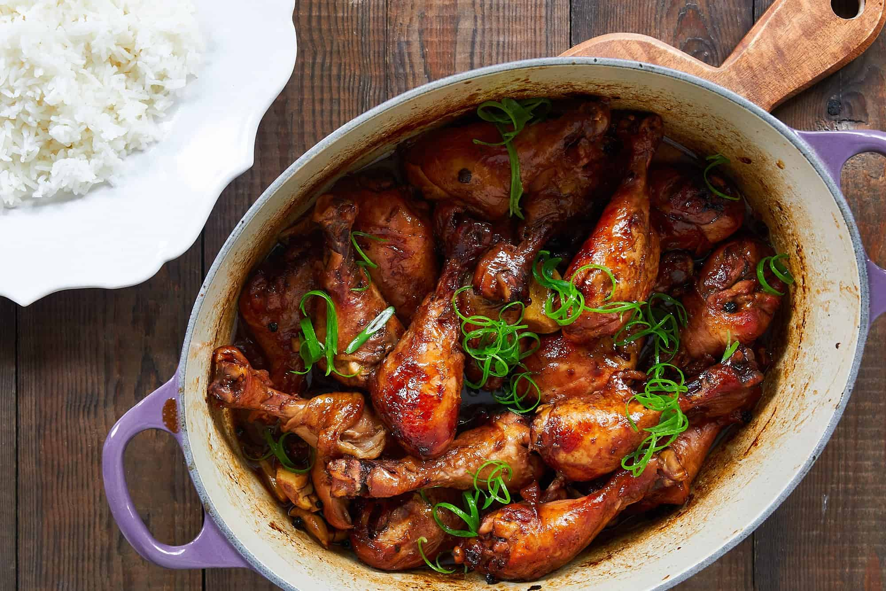
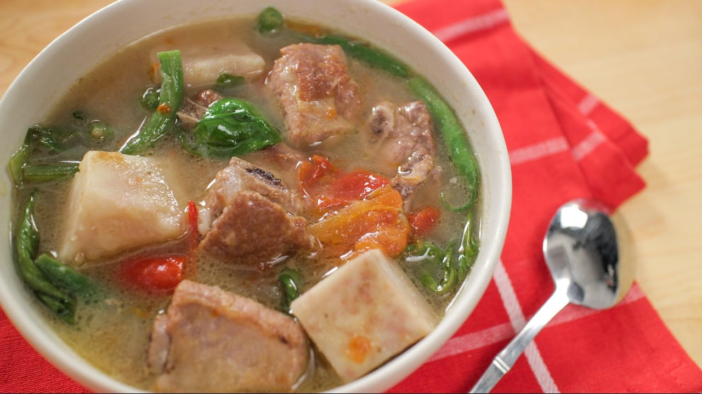
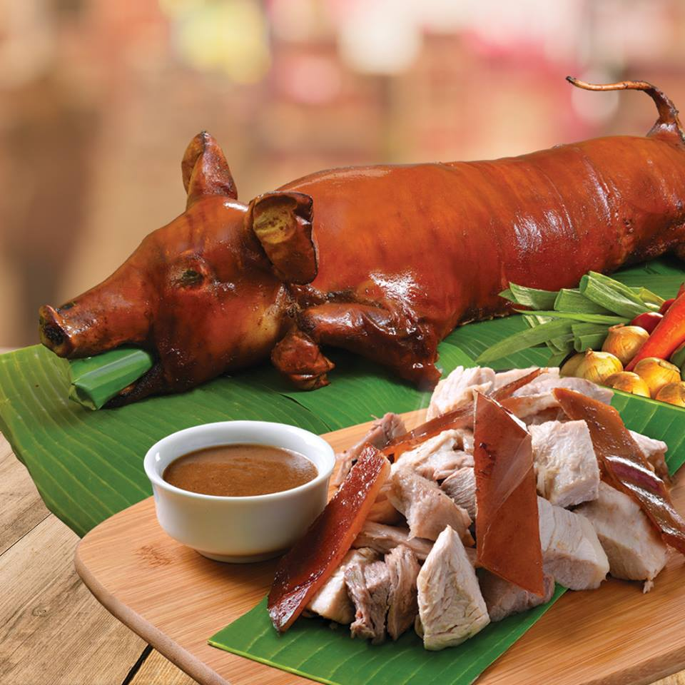
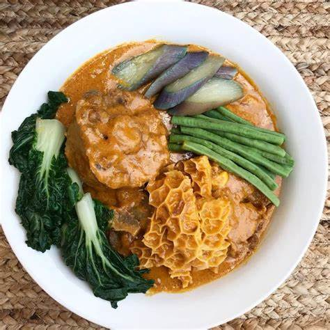
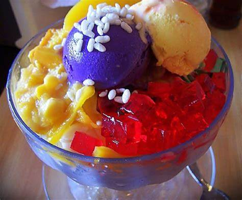

Menu
Gallery
Homepage
Philippine Food Menu
Adobo - A savory and tangy dish made with chicken or pork.
Sinigang - A sour soup with tamarind and vegetables, often with pork or shrimp.
Lechon - A whole roasted pig, crispy on the outside and juicy inside.
Kare-Kare - A peanut-based stew served with oxtail and vegetables.
Halo-Halo - A popular dessert made with crushed ice, milk, and various sweet toppings.
Gallery
Experience the beauty of Philippine cuisine through images.
    